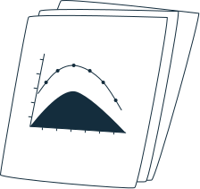

My name is Jessie (she/her). I'm a Taiwanese-Canadian product designer from Vancouver, BC, living as a polite expat in San Francisco. Currently, I design for Apple Health Special Projects.
Previously, I designed developer experience for Apple.
I created aviation analytics products for Boeing, built data visualizations, and conducted research in vision science.
Read my TL;DR.
I'm a generalist. I understand that different kinds of chaos can feel very similar, whether at a startup or a
monolithic enterprise.
I've designed complex systems, often involving lots of data in specialized domains
like aviation, devOps, and healthcare.
Prior to joining Apple, I began my career as a solo designer on many large engineering projects, growing layers of
thick skin by also playing the role of researcher, product manager, and design evangelist.
At Apple, I conducted user research and usability testing for Apple Cloud Services prior to the launch of an internal self-service PostgresSQL offering.
To help iTunes and Maps engineers manage a large number of data processing jobs, I designed a task scheduling and workflow management feature for our PaaS (similar to Apache Airflow), allowing engineers to create, schedule, and monitor complex Apache Spark workflows.
At Boeing, I created data products to help engineers and analysts do more with numbers.
This included dashboards to forecast aircraft life cycles, market evaluation tools for estimating flight disruption costs, and fuel efficiency dashboards to
help airlines reduce operating costs.
I designed and tested a whitespace product to improve an existing disruption management tool, with the goal to help airline operation centers track
flight status and mitigate delays.
I introduced a new design system to revamp legacy analytics applications that help engineers monitor and anticipate aircraft maintenance issues.
As a data designer for an atomic startup, I created many interactive data dashboards for our primary client, Boeing.
Outside of client work, I had a lot of fun creating data stories
to promote our company in the open data community.
Here, I refined my own design and development process, learned to roll with the ambiguity and chaos that is startup life, and also leveled up in navigating the intricacies of a massive organization like Boeing.
At the University of British Columbia, I managed the
Visual Cognition Lab and led research projects
that explored interesting quirks with visual perception.

On one data visualization project, we used radical encodings like luminance and
orientation to see whether people can effectively understand correlation from those unconventional charts.
I programmed experiments, conducted trials, performed statistical analysis, and had a blast making data beautiful and meaningful.
Written, designed, illustrated, and built by me.